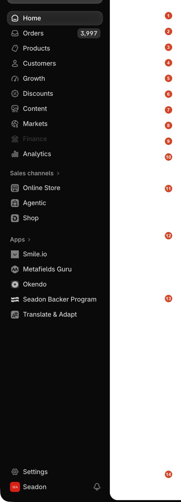

On this page
- S1 · What the website actually is
- S2 · The shop window and the back office
- S3 · Logging in, step by step
- S4 · The map of the admin
- S5 · Five words you will see everywhere
- S6 · The three rules that prevent the worst mistakes
- S7 · Your first ten minutes, safely
- S8 · If you are not sure what to do
- S9 · Glossary: every term in plain words
S1 · What the website actually is
Seadon sells clothing online. One website does three jobs at the same time, and it is worth knowing which job you are touching before you click anything.
- Selling products. Customers browse clothing, add it to a cart, and pay. This part is a normal shop: photos, sizes, prices, stock.
- Running the Backer Program. People who backed the original Kickstarter campaign get their reward through the same website. They log in, claim a reward, and pay any balance.
- Running promotions. Bundles, Black Friday prices, discount codes and the free gift ladder all live here too. This is where most money is won or lost by a single mistyped number.
The website is hosted by a company called Shopify. Shopify stores the products, the customers and the orders, and it shows you a control panel in a web browser. Nothing is installed on your laptop, and nothing is stored in a folder on your desktop.
S2 · The shop window and the back office
Every Shopify store has two faces, and confusing them is the first thing that trips people up.
| Face | Address | What it is for | Who can see it |
|---|---|---|---|
| The storefront | seadon.co |
What a customer sees. Product photos, the cart, checkout. | Anyone on the internet |
| The admin | admin.shopify.com/store/seadonlimited |
What you see when you log in. Products, orders, themes, prices. | Only staff with an account |
Editing in the admin does not change the storefront until you save, and some changes publish only when you press a specific publish button. The other pages of this set tell you which is which for every task. If you are ever unsure whether a change is live, open seadon.co in a second browser tab and look.
S3 · Logging in, step by step
- Open a browser. Chrome or Safari both work. Use a private window only if you are on a shared computer.
- Type
admin.shopify.com/store/seadonlimitedin the address bar and press Return. - If you are already signed in to the company account, the admin opens straight away. If not, Shopify asks for the email address on your staff account.
- Enter the password for that account. This is the company account, not a personal one.
- If a second step asks for a code, get the code from the phone or authenticator that holds the company login. Do not ask a colleague to read theirs.
- You should land on the admin home page, with a dark sidebar on the left. If you land on a page asking you to create a store, you are signed into the wrong account: stop and ask Carson.
Passwords never travel in a document
No password, token or code appears in this documentation set. Page 3 says who holds each account and what has to move. If you are locked out, ask Carson, who owns the company accounts.
S4 · The map of the admin
The dark bar down the left side is the map. Every task in this documentation starts by clicking one of these items, so learn the shape of it once and the rest follows.

- Home. The dashboard. Sales today, orders to fulfil, shortcuts. Start here each morning.
- Orders. Every order, newest first. The badge is how many are waiting.
- Products. The catalogue. Each colour of each garment is its own product here.
- Customers. Everyone who has bought something, with their order history.
- Growth. Marketing tools Shopify adds by default. Not used by Seadon day to day.
- Discounts. Discount codes such as
WELCOME10. Not where bundle prices live. - Content. Blog posts and the files behind pages. Rarely touched.
- Markets. Which countries and currencies the store sells in. Do not change without asking.
- Finance. Payouts and bills. Read only for most staff.
- Analytics. Reports on sales and traffic.
- Online Store. The theme, meaning how the site looks and behaves. This is the most dangerous area to edit.
- Apps. Installed apps, including the Backer Program (see marker 13).
- Seadon Backer Program. Inside Apps. The dashboard for claims, pricing and imports.
- Settings. Store-wide settings: payments, shipping, taxes, staff accounts.
Faster than clicking
Press Command and K together on a Mac, or Control and K on Windows, to open the search box. Type a product name, an order number or a page name and press Return. This is the fastest way to reach anything in the admin, and it is safe: search changes nothing.
S5 · Five words you will see everywhere
Learn these five and most sentences in the other pages become readable. The full glossary is at the end of this page.
| Word | Plain meaning | Example in this store |
|---|---|---|
| Product | One thing you can buy, with its own page and photos. | Seadon Unisex EXP Travel Pants, Atlantic Blue |
| Variant | A version of that product: a size, usually. Price and stock belong to the variant. | Atlantic Blue, size medium |
| Collection | A group of products shown together on one page. Some fill themselves by rule. | Men's Travel Pants |
| Theme | The set of files that draws the storefront: layout, colours, fonts, behaviour. | seadon.production |
| Metafield | An extra box of data attached to a product, customer or the store, beyond Shopify's built-in fields. | bundle.rules, the pricing document |
S6 · The three rules that prevent the worst mistakes
- Never edit the live theme. Duplicate it first. The live theme is the one customers are looking at. Make a copy, work on the copy, preview it, then publish the copy. Page 1, section W1, walks through this with screenshots.
- Find the Save button before you walk away. Product, collection and discount pages save with their own Save button. The theme editor saves with the Save button in its top bar, and that Save is what changes the live site. A grey Save means nothing is pending; a dark Save means the storefront is one click from changing.
- Use the dry run for anything that writes in bulk. The backer importer can create hundreds of customers. Its dry run tells you what it would do without doing it. Never run a real import first.
Two things that cannot be undone
Deleting a theme section deletes its settings. Deleting a product deletes its reviews and links. Hide or unpublish instead of deleting, and wait a week: if nobody missed it, delete it then.
S7 · Your first ten minutes, safely
This exercise touches nothing that customers can see. It is the fastest way to learn the shape of the admin.
- Log in and click Online Store in the sidebar, then Themes.
- Find the live theme card, the one without a Draft label. Do not press Publish.
- Press Edit theme on a draft theme, not the live one. The editor opens with a preview of the site on the right and a list of sections on the left.
- Click one section in the left list and watch its settings appear. Change nothing.
- Press the browser's back button, or close the tab. Because you changed nothing, nothing is lost, and no dialog will ask you to save.
- Now open
seadon.coin another tab and compare. Same site. The editor shows what is saved, not what you clicked.
S8 · If you are not sure what to do
Use this order. It turns most panics into a short list.
- Stop clicking. Do not press Save again, and do not reload repeatedly.
- Look at the storefront in a separate tab. If the storefront looks right, customers are fine and you have time.
- Say what you changed, even if you are unsure. The exact screen and the exact field is enough to fix almost anything.
- Open the troubleshooting table for the area: page 1 for the storefront, page 2 for the Backer Program.
- Roll back if the site is broken. Publishing the previous theme takes seconds and reverts everything. Page 1, W1.
S9 · Glossary: every term in plain words
Alphabetical. Each line is a full explanation on its own, so you can jump straight to the word you met.
- Admin
- The control panel at
admin.shopify.com. Only staff can open it. - App
- An extra program that plugs into Shopify. Seadon uses the Backer Program, Smile.io, Okendo, Metafields Guru and Translate and Adapt.
- Backer
- Someone who paid for a reward before the product existed. In this store, a customer with a claim entry.
- Block
- A small piece inside a section: one line of text, a button, an image. Sections are built from blocks.
- Bundle
- Two or more items bought together at a lower price, for example two merino items at 30 percent off each. The price comes from the pricing document, not from a discount code.
- Campaign
- One Kickstarter or BackerKit project, identified by a key such as
merino_shirt. The key links claims, rewards and pricing together. - Cart
- The page where chosen items wait before checkout. The free gift ladder appears here.
- Checkout
- Where the customer pays. Shopify draws this page, so the theme does not control its layout.
- Claim
- A backer's record of the reward they are owed, and its progress: unclaimed, reserved, checkout ready, claimed.
- Collection
- A group of products on one page. An automated collection fills itself when a product matches a rule such as a title match.
- Commit
- A saved snapshot of the code with a message describing the change. Think of it as a numbered save point you can return to.
- Cron job
- A task a server runs on a schedule without anyone clicking. Here: inventory at 04:17 UTC and customer mirror at 05:23 UTC.
- CSV
- A spreadsheet saved as plain text, one row per line, commas between values. Kickstarter backer reports arrive as CSV.
- Deploy
- Putting new code live. For the app this means Vercel; for the theme it means publishing in Shopify.
- Draft order
- An unpaid order Shopify creates so a backer can pay a specific amount. It is how a reward turns into a real order.
- Dry run
- A trial that reports what would happen without writing anything. The importer has one and it is on by default.
- Environment variable
- A secret setting stored on the server, never in the code. Tokens live here.
- Free gift ladder
- The three steps in the cart: free shipping at 100, one gift at 175, a second gift at 225, in US dollars.
- Health check
- A page that reports whether the app can reach Shopify and Redis.
/api/healthis readable without logging in and shows counts only. - Import
- Uploading a CSV of backers so the app creates customers and claims. Always run it as a dry run first.
- Metafield
- An extra data box attached to a product, customer or shop. Seadon keeps claims, campaign rules, bundle prices and colourway links in metafields.
- Mirror
- A fast copy of Shopify's customer list held in Redis so the dashboard does not scan Shopify on every visit.
- Product
- One purchasable item with its own page. Each colourway is a separate product in this store.
- Redis
- A small, very fast database used for the customer mirror, stock levels and the gift counter.
- Repository
- A folder of code with its full history, hosted on GitHub. Seadon has two: the theme and the app.
- Rung
- One step of the gift ladder. Rung 1 is the first gift, rung 2 the second.
- Section
- A band of a page: the slideshow, the best sellers row, the footer. Sections are what you edit in the theme editor.
- Storefront
- The public website customers see, at
seadon.co. - Template
- The file that says which sections a page uses and in what order. The home page is one template, a product page is another.
- Theme
- The collection of files that draws the storefront. The live one is
seadon.production. - Token
- A long secret string that lets a program act on Shopify without a password. Tokens are stored in Vercel, never in a document.
- Variant
- A specific version of a product, usually a size. Price and inventory belong to the variant.
- Vercel
- The company that runs the Backer Program app, and where its secrets are stored.
- Webhook
- A message Shopify sends automatically when something happens, for example when an order is paid. The app listens so claims update without anyone clicking.